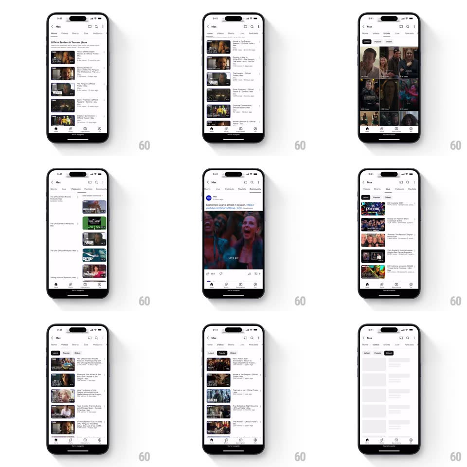

Media
Frame-by-frame

Rebuild this interaction 1:1: YouTube's channel tabs - swipe horizontally between channel tab pages and the underline indicator travels with your finger, with black-pill sub-filters inside Videos.

Rebuild this interaction 1:1: YouTube's channel tabs - swipe horizontally between channel tab pages and the underline indicator travels with your finger, with black-pill sub-filters inside Videos. ## Integration Integration: stack-agnostic spec - springs given as stiffness/damping, timed motions as duration + curve; map every value to your framework and animation library of choice. ## Scene A channel page (banner, avatar, name, subscribe pill) with a tab row: Home, Videos, Shorts, Live, Podcasts, Playlists, Community. Below, paged content: video lists, shorts grids, community posts with inline media. The Videos page carries sub-filter chips: Latest, Popular, Oldest. ## Motion spec Pattern: gesture-driven tab pager with tracking indicator. - Horizontal swipe: pages pan 1:1 with the finger (adjacent page visible at the edge during the drag); the tab underline stretches and travels between tab labels proportionally to drag progress (its width interpolates between the two labels' widths, position locked to scroll offset). - Release: the pager snaps to the nearest page (spring ~380/26); the underline completes its travel on the same spring - indicator and content never decouple. - Tap a tab: the pager scrolls directly to that page (animated 300ms, ease-out), the underline gliding through intermediate tabs; the tapped label darkens (gray to black, 150ms). - The tab row scrolls horizontally to keep the active label visible (auto-center with spring ~360/28) when pages change. - Sub-filter chips: tap fills the chip black with white text (background + color, 150ms); the list beneath crossfades to the re-sorted content (200ms) with a brief skeleton shimmer on slow loads. - Vertical scroll inside a page collapses the channel header (banner parallax-fades, title row pins under the app bar) - standard YouTube collapsing header. ## Calibration - The underline is 2-3px, black, and only as wide as the active label - it must stretch mid-drag. - Pages keep independent scroll positions when switching back and forth. ## Reduced motion Page switches crossfade; indicator jumps. ## Don't miss - The indicator tracks the DRAG continuously, not just on release - it's glued to scroll offset. - Shorts pages switch the list to a 2-column grid; the layout change is part of the page, not a separate animation.